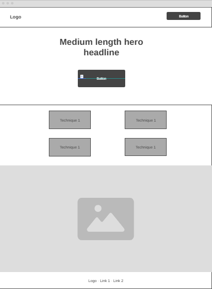
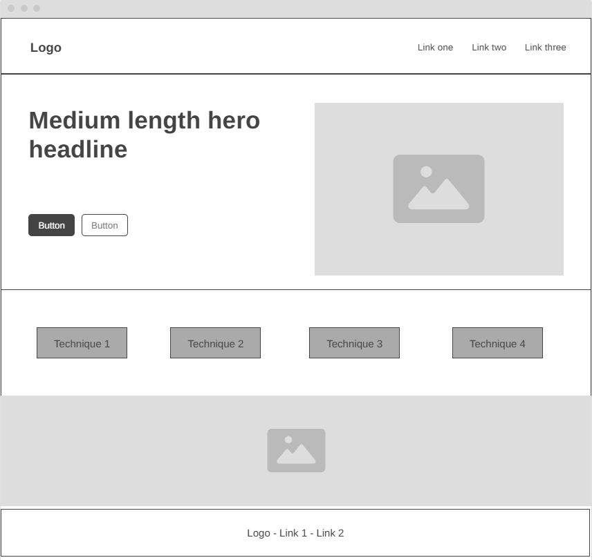

01 / Identity
Site Name
Breathe Well
The name is simple, welcoming, and directly connects mindful breathing with everyday well-being. It suggests practical support without making the site feel clinical or intimidating.
Suggested domain: breathewell.guide
02 / Direction
Site Purpose
Breathe Well is an informative guide to breathing techniques that can support stress relief, anxiety management, focus, and general well-being. Visitors will find clear instructions, guidance for choosing a technique, and approachable explanations of when and how to practice. The site will help people build a simple breathing practice they can use in daily life.
03 / Audience
Visitor Scenarios
- “I feel stressed before a presentation. Which breathing exercise can help me feel calmer quickly?”
- “How do I practice box breathing, and how many rounds should I do?”
- “Is there a breathing technique that can help me focus while studying?”
- “Where can I find a gentle exercise to help me unwind before bed?”
04 / Visual system
Color Schema
A soft, nature-inspired palette keeps the experience grounded, readable, and reassuring.
-
Soft Sage Green
#A8C5B0· Primary color for buttons, highlighted panels, and selected interface elements. -
Deep Teal
#2C5F5D· Headings, navigation, and strong visual anchors. -
Warm Off-White
#F7F5F2· Main page background and open content areas. -
Soft Coral
#E8A598· Small accents, hover states, and gentle calls to action. -
Dark Charcoal
#2D2D2D· Body copy and supporting text for comfortable contrast.
05 / Type system
Typography
Headings · Montserrat
Find your steady breath.
Montserrat is used for page titles, section headings, and short labels. Its clear geometric forms give the brand a confident, calm voice.
Body · Open Sans
Open Sans is used for paragraphs, instructions, and navigation. Its readable shapes support longer explanations and quick scanning on mobile or desktop.
06 / Page structure
Home Page Wireframes
The home page introduces the purpose, helps visitors choose a need, and leads into practical breathing guides.

